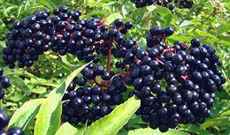
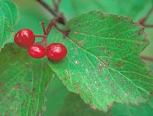
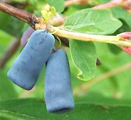
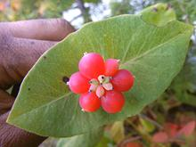
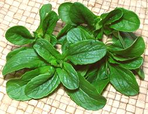
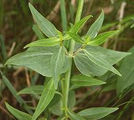
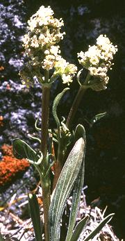

SAFARI
Users
- Elderberries - Family Adoxaceae
- Honeysuckles - Family Caprifoliaceae
- Valerians - Family Valerianaceae
Elderberry Family
[Adoxaceae]
These plants were formerly part of the Honeysuckle family, but the Angiosperm Phylogeny Group found them different enough to separate out into a separate family.
Elderberries [Sambucus nigra and many similar species] Elderberries range from low shrubs to medium size trees, and are found on all continents except Antarctica. Those known in Europe, Asia and North America produce blue-black berries or bright red berries, but Australian species produce white or yellow berries. For a detail list of species see Sambucus at Wikipedia. Elderberries, both flowers and fruit, are much used throughout
their regions to produce flavoring syrups and beverages, both
non-alcoholic and alcoholic, including wines. The berries and flowers
are also used to produce jams and pie fillings. In Germany, umbels
(clusters) of berries are battered and deep fried as a sweet desert,
topped with sugar and cinnamon. Elderberries have traditionally been
used as a mild medicinal in Europe, and the tree figures in
Traditional Chinese medicine as well.
Photo by Edal Anton Lefterov distributed under license
Creative Commons
Attribution ShareAlike 3.0 Unported.
Squashberry [Mooseberry, Pembina, Pimbina, Highbush Cranberry, Lowbush Cranberry; Moosomin (Cree); Viburnum edule | Nannyberry, Sheepberry, Sweet Viburnum: Viburnum lentago] Most viburnums are somewhat toxic or cause digestive problems, but no problems have been reported for this fruit, either raw or cooked. It is highly regarded for jam, and can also be dried for winter use. The berries are about 0.35 inch diameter, bright red with a single large seed. They are somewhat tart but with a pleasant taste. The American Indians may have waited until after the first frost to harvest them, at which time they would probably be less tart. This plant is native to the far northern states of the United States, all of Canada and Alaska, and in spots extends as far south as Colorado and Pennsylvania. V. lentago is also edible, but less well known. It has
blue-black fruits around 1/2 inch long. This plant is native to the
Great Lakes region of the United States, and spills over into Canada
in a couple of places. I suspect there are other viburnus with
culinary uses, but I have insufficient information on any others.
Photo of V. edule by Dave Powell, USDA Forest
Service, distributed under license Creative Commons
Attribution ShareAlike 3.0 United States.
|
Honeysuckle Family
[Caprifoliaceae]
While long used by children, who pull the narrow funnel shaped flowers off and suck the sweet nectar from the stem end, honeysuckles have not been noted for food. Some species produce berries that are mildly toxic, some are edible but rather bitter - but one species seems to be a major exception.
Blue-berried Honeysuckle [Honeyberry, Sweetberry Honeysuckle; Hascap (Japan); Lonicera caerulea] This shrub, growing to about 6 feet tall, is native to the colder latitudes of the Northern Hemisphere. It has avoided west coasts of North America and Eurasia but is now being planted in Oregon state. The berries are up to 0.4 inch diameter and are reported to taste like raspberries, blueberries and/or black currants. These berries are expected to have a bright future flavoring ice
cream, smoothies, yogurt, etc. particularly because the seeds are
almost unnoticeable and the skin disintegrates easily and completely
when processed. They can also be made into a deep red wine which is
considered comparable to grape wine. Care must be taken with ripeness,
as unripe berries can be completely blue but have greenish flesh that
tastes grassy and bitter. The flesh is deep red-purple when ripe.
Photo by Opiola Jerzy distributed under license Creative
Commons
Attribution ShareAlike 3.0 Unported.
Orange Honeysuckle [Western Trumpet Honeysuckle; Lonicera ciliosa]
Native to forests of western North America, this shrub can grow to
20 feet. The orange flowers and fruit form over a disk leaf (two
leaves fused at the base) at the end of twig shoots. The berries are
translucent orange or pink, less than 0.4 inch diameter. They are
considered edible, raw or cooked, but are little used.
Photo by Jrtayloriv distributed under license Creative
Commons
Attribution ShareAlike 3.0 Unported.
|
Valerian Family
[Valerianaceae]
This family of popular flowering garden plants is far better known for medicinals and perfumes than as food.
Mâche [Corn Salad, Lamb's Lettuce, Fetticus, Field Salad, Feldsalat, Nut Lettuce, Rapunzel; Valerianella locusta] This small plant is the only commonly eaten species in the entire Valerian family (Red Valerian is edible, but not considered worth the bother). This slow growing herb is gathered wild and planted in gardens in the cooler latitudes of the temperate region. In warmer areas it bolts too quickly. Because it is usually quite small, with closely spaced leaves, it is often used as a garnish in fancy restaurants. Where easily available, it is a common salad green.
The flavor is unique and slightly nutty (emphasis on "slightly"). The
common name "Corn Salad" comes from it being a common weed in wheat
fields (called "corn fields" in England). The photo specimens, about
2-3/4 inches across, were obtained from a specialty grower in a
Los Angeles farmer's market.
Red Valerian [Jupiter's Beard, Spur Valerian; Centranthus ruber]
This common garden plant is native to the Mediterranean region has
been naturalized in the United States west of the Rocky Mountains,
as well as the British Isles and Australia. It comes in both red
and white flowering varieties. Leaves are edible raw in salads or
cooked as greens, and roots can be boiled in soups. There is
controversy as to whether you'd really want to eat it either way,
as some don't like the taste.
Photo by Wouter Hagens contributed to the Public
Domain.
Tobacco Root [Edible Valerian; Kooya Valeriana edulis]
This plant, native to western North America is probably no longer
eaten, but was of great importance to American Indians on the
western side of the Rocky Mountains, particularly in and near
Colorado. The Indians considered the roots toxic, so they were pit
baked for 2 days before serving. The flavor and aroma are said to be
very unique, found intriguing by some, and found totally offensive
by others.
Photo by U.S. National Parks Service = Public Domain
.
|